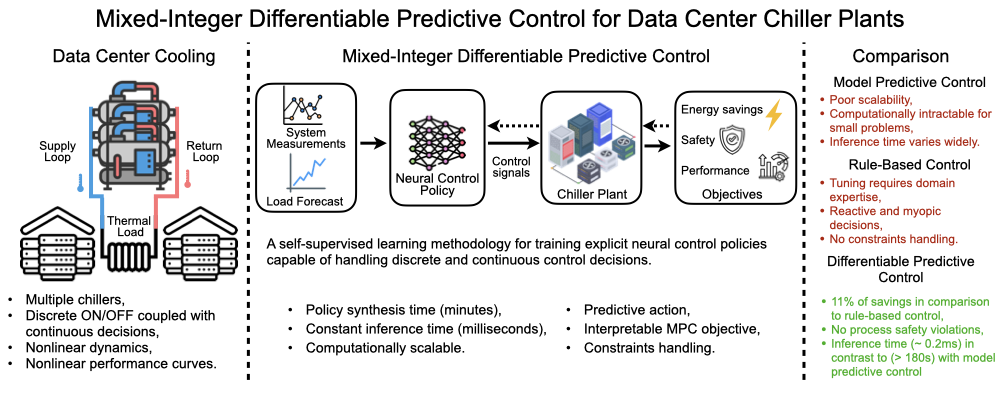
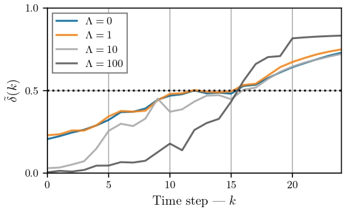
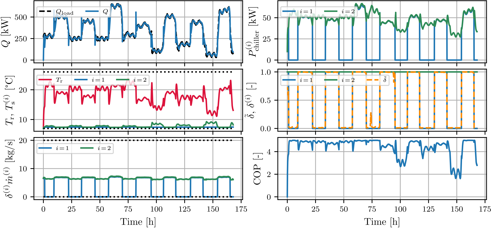
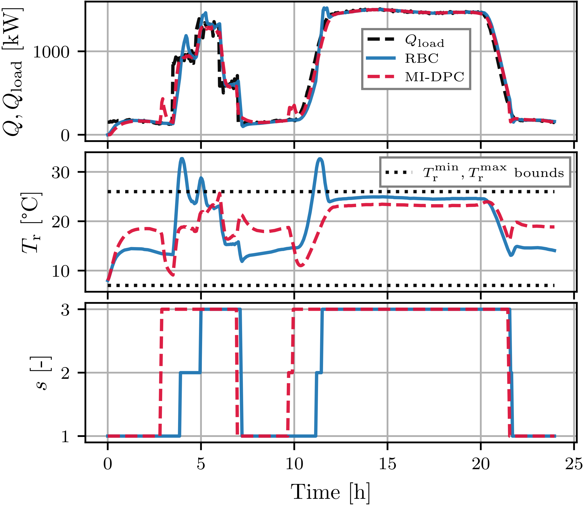
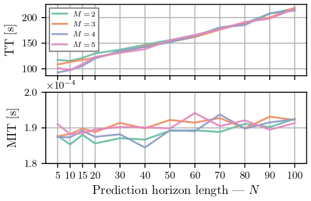

Figure: Graphical Abstract.
Motivation
To address these challenges, the proposed approach utilizes Differentiable Predictive Control (DPC) (Drgona et al., 2022), which formulates parametric MPC problems as differentiable programs, enabling offline self-supervised learning of explicit neural control policies through gradient-based learning. Expanding upon this foundation, recent work on Mixed-Integer DPC (MI-DPC) (Boldocky et al., 2025) extended this idea to handle mixed-integer optimal control problems (MI-OCPs) with discrete decision variables.
Contributions
- Formulation of a control-oriented multi-chiller dynamics model.
- Implementation of mixed-integer differentiable predictive control (MI-DPC) for multi-chiller plant optimization.
- Introduction of binary-variance regularization (BVR) to limit high frequency binary switching.
- Performance comparison with rule-based control (RBC) and mixed-integer model predictive control (MI-MPC).
- Release of open-source code for reproducible numerical experiments.
Problem Formulation
where \( Q^{(i)}(t)\!\in\!\mathbb{R}_{\ge0} \) is the delivered cooling from chiller \( i \) at time \( t \), \( \delta^{(i)}(t)\!\in\!\{0,1\} \) denotes the chiller's on/off state, \( c_\mathrm{p}\! \in\!\mathbb{R}_{>0} \) is the specific heat capacity of the coolant, \( T_\mathrm{r}(t)\!\in\!\mathbb{R} \) is the return water temperature, and \( C_\mathrm{r},C^{(i)}\!\in\!\mathbb{R}_{>0} \) are the thermal capacitances of the return and chiller loops, \( T_\mathrm{s}^{(i)}(t)\!\in\!\mathbb{R} \) is the supply water temperature for chiller \( i \in \{1, ..., M\} \). Moreover, \( \eta_\mathrm{r},\eta_\mathrm{s}\!\in\!(0,1) \) denote the heat-exchanger efficiency coefficients, and \( \tilde{Q}_\text{load}(t)\!\in\! \mathbb{R}_{\ge0} \) is the effective thermal load, estimated using a low-pass, discrete-time finite impulse response (FIR) filter \( \tilde{Q}_\text{load} (t) = \sum_{l=0}^{L} h_l Q_\text{load}(t-l\Delta t) \), where \( Q_\text{load}(t)\in\mathbb{R}_{\ge 0} \) is the direct server load; an exogenous variable in this context. In the following, the continuous-time dynamics are discretized using a fourth-order Runge-Kutta method with a time-step length \( \Delta t \) and discrete time index \( k \); denoted as \( f(x_k, u_k, \tilde{Q}_{\text{load},k}, \Delta t) : \mathbb{R}^{n_x} \times \mathbb{R}^{n_u} \times \mathbb{R} \rightarrow \mathbb{R}^{n_x} \), where \( x_k = [T_r(k), T_s^{(1)}(k), ..., T_s^{(M)}(k)]^T \).
The power consumption of chillers \( P^{(i)}_\text{chiller}(t)\in\mathbb{R}_{\ge 0} \) and pumps \( P^{(i)}_\text{pump}(t)\in\mathbb{R}_{\ge 0} \) are modeled as \begin{align} P^{(i)}_\text{chiller}(t) &= \frac{Q^{(i)}(t)}{\text{COP}^{(i)}(t)}+\rho^{(i)}\delta^{(i)}(t) \label{eq:chiller_power},\\ \text{COP}^{(i)}(t) &= a_0^{(i)}+a_1^{(i)}\frac{Q^{(i)}(t)}{Q_\text{max}^{(i)}}+a_2^{(i)}\left(\frac{Q^{(i)}(t)}{Q_\text{max}^{(i)}}\right)^2,\\ P^{(i)}_\text{pump}(t) &= \gamma^{(i)}\left( \dot{m}^{(i)}(t)\delta^{(i)}(t) \right)^3, \label{eq:pump_power} \end{align} for the system constants \( a_{0:2}^{(i)},\gamma^{(i)},\rho^{(i)},Q_\text{max}^{(i)}\!\in\!\mathbb{R} \). The constant \( \rho \) represents the base power required for chiller operation. In this formulation, the chiller's coefficient of performance \( \text{COP}^{(i)}(t)\in\mathbb{R}_{\ge0} \) is a function of the part-load ratio (PLR), the ratio of current cooling to maximum cooling capacity. Ensuring that each chiller is operating near its highest efficiency load ratio is the core of the underlying optimal control problem.
-1.png)
Methodology
where, the parameters \( \theta_{(\cdot)} \) of the control policies \( \pi_{\theta_1} \), \( \pi_{\theta_2} \), and \( \pi_{\theta_3} \) are the optimization arguments. The policies map the vector of control parameters \( \xi \) to continuous-valued control variables \( \dot m \) (mass flow), \( T_\mathrm{e} \) (evaporation temperature), and a slack variable \( \tilde\delta\!\in\!\mathbb{R}^{M-1} \) (relaxed value of the binary control variable \( \delta \)). By fixing one of the binary variables, the dimension of \( \tilde\delta \) is reduced to \( M\!-\!1 \). This is done as a safety mechanism to ensure that at least one chiller is always on. To compute control variables, separate neural modules are used, which are represented by fully connected deep neural networks. Moreover, the control parameters are sampled from a known probability distribution \( P_\xi \) to emulate scenarios that are likely to occur during the system's operation. \(N\) denotes prediction horizon length, whereas functions \( q(\cdot) \) and \( p(\cdot) \) denote state and input penalty functions weighted by \( \lambda_x \) and \( \lambda_u \), respectively.
The binary integrality is enforced using a threshold-based discretization scheme with a fixed threshold of \(0.5\), given as \begin{align} \delta^{(i)}_{k} = & \begin{cases} 1, & \text{if } \tilde\delta^{(i)}_{k}>0.5,\\[0pt] 0, & \text{otherwise.}\\[0pt] \end{cases} \end{align} This function behaves analogously to a Heaviside function exhibiting a discontinuity at \(0.5\). To enable gradient-based optimization, a Straight-through estimator heuristic by (Bengio et al., 2013), is used. The gradient is approximated using its differentiable surrogate, given by a scaled sigmoid function \( \sigma(x)\!=\!\left(1+e^{-\mu (x-0.5)} \right)^{-1} \), where \( \mu\!\in\!\mathbb{R}_{>0} \) is a slope parameter determining the sharpness of the transition; additionally, the function is centered at \(0.5\). Accordingly, the derivative is approximated as \begin{align} \frac{\partial \delta^{(i)}_{k}}{\partial \tilde{\delta}^{(i)}_{k}} \approx \frac{\partial \sigma\!\left(\tilde{\delta}^{(i)}_{k}\right)}{\partial \tilde{\delta}^{(i)}_{k}}. \end{align}
The differentiable computational graph, comprises four components: a continuous neural policy, a differentiable rounding layer, a differentiable ordinary differential equation (ODE) solver, and a model predictive loss function. Given synthetically sampled control parameters that include the initial conditions and a length-\(N\) vector of exogenous variables (server load), a closed-loop rollout of length \(N\) is performed through the integrated system dynamics, constituting the single-shooting forward pass. Consequently, the loss function is evaluated based on the resulting closed-loop trajectories. The backward pass is used to enable policy optimization by propagating gradients through the computational graph. Specifically, gradients of the loss function with respect to policy parameters are obtained by back-propagating through the integrated system dynamics using either the backpropagation through time algorithm (Puskorius and Feldkamp, 1994).
-1.png)
Figure: Conceptual diagram of the mixed-integer differentiable predictive control for nonlinear chiller plant optimization. Green dashed arrows represent the forward pass, while red dashed arrows represent the backward pass.
Binary-Variance Regularization

Figure: Experimental results for the influence of the binary-variance regularization on the relaxed binary variable for different penalty magnitudes under a step change in cooling load from \(150 \text{ kW}\) to \(500 \text{ kW}\) occurring at time \( k\!=\!20 \).
Simulation Results
Let's consider optimization problem of multi-chiller plant with sampling time of \( \Delta t = 180 \) seconds and the following parameters:
| Symbol | Description | Value | Unit |
|---|---|---|---|
| \(c_\mathrm{p}\) | Specific heat of water | 4.184 | kJ/(kg·°C) |
| \(C\) | Thermal capacitance | 14644 | kJ/°C |
| \(C_\mathrm{r}\) | Thermal capacitance | 29288 | kJ/°C |
| \(\rho\) | Base chiller power | 10 | kW |
| \(Q_{\max}\) | Maximum rated cooling | 500 | kW |
| \(a_0\) | Efficiency coefficient | 1 | - |
| \(a_1\) | Efficiency coefficient | 19.33 | - |
| \(a_2\) | Efficiency coefficient | -18.33 | - |
| \(\eta_\mathrm{s}\) | Heat exchanger efficiency | 0.7 | - |
| \(\eta_\mathrm{r}\) | Heat exchanger efficiency | 0.75 | - |
| \(\gamma\) | Pump power coefficient | 9.62e-4 | kW·s³/kg³ |
| \(\dot{m}^\text{min}\) | Minimum mass flow rate | 6 | kg/s |
| \(\dot{m}^\text{max}\) | Maximum mass flow rate | 20 | kg/s |
| \(T_\text{s}^{\text{min}}, T_\text{e}^{\text{min}}, T_\text{r}^{\text{min}}\) | Minimum temperatures | 7 | °C |
| \(T_\text{s}^{\text{max}}, T_\text{e}^{\text{max}}\) | Maximum temperatures | 12 | °C |
| \(T_\text{r}^{\text{max}}\) | Maximal return temp. | 26 | °C |

Figure: Closed-loop seven-day simulation results of a two-chiller system obtained with MI-DPC for a prediction horizon of \(N\!=\!15\). The process constraints are depicted by black dotted lines.
The proposed MI-DPC framework achieved up to \(13\)% energy savings when compared to the rule-based controller (RBC) . These savings resulted primarily from more adaptive and frequent chiller staging, albeit at the expense of a larger relative load-tracking error, as well as from reduced water pump power consumption. MI-DPC simultaneously schedules chiller activation and adaptively adjusts the continuous control variables.
In addition to energy savings, the MI-DPC framework outperformed the RBC in terms of constraint satisfaction. Specifically, when considering cooling ramp-rate constraints, i.e., \(\dot{Q}_{\min}\leq\!\dot{Q}\!\leq\dot{Q}_{\max}\), which have been observed in real chiller plant operations and reported by Shan et al. (2021); the RBC may fail to activate chillers in time when encountering a steep increase in cooling demand. As illustrated in Figure below, the RBC stages chillers solely based on the staging threshold. However, due to the cooling ramp limitation, the return temperature can exceed the process safety bounds. In contrast, the MI-DPC framework anticipates future load changes and stages chillers proactively based on the known future cooling demand. In the experiment, during the \(3\!-\!7\) hours interval, the results demonstrate that MI-DPC effectively adapts to abrupt changes in the cooling load profile, even when such scenarios were not represented in the training dataset.

Figure: Closed-loop simulation results of a chiller plant \( (M\!=\!3) \) with MI-DPC \( (N\!=\!15) \) and RBC policies, highlighting the importance of predictive action for stable operation when cooling ramp-rate constraints are considered.
Computational Scalability

Figure: Computational scalability of MI-DPC across different numbers of chillers \( (M) \) and horizon lengths \( (N) \). The top panel illustrates the total training time ( TT ), while the bottom panel reports the mean inference time ( MIT ).
Conclusions and Future Work
Building on the findings of this study, several extensions are envisioned. The chiller plant model is to be extended to include cooling towers, allowing for further energy savings potential through optimization of condenser-water loop setpoints (Huang et al., 2017; Wang et al., 2019). The integration of water-side economizers can also be explored, as these have been shown to reduce energy through free-cooling (Faulkner et al., 2025) and introduce additional discrete control variables for economizer activation. Future work will also incorporate probabilistic cooling-load forecasting to more accurately capture real-world uncertainty.
It is further recognized that the problem is solved approximately, without a guaranteed global optimum. Moreover, while integrality and satisfaction of input constraints are enforced through projection-based methods, strict feasibility for state constraints is not guaranteed. These aspects will be addressed in future work.
Acknowledgment
This work was also supported by the Ralph O’Connor Sustainable Energy Institute (ROSEI) at Johns Hopkins University.
BibTeX
@article{boldocky2026data,
title={Data center chiller plant optimization via mixed-integer nonlinear differentiable predictive control},
author={Boldock{\'y}, J{\'a}n and Faulkner, Cary and Michael, Elad and Gulan, Martin and Tuor, Aaron and Drgo{\v{n}}a, J{\'a}n},
journal={Control Engineering Practice},
volume={174},
pages={107063},
year={2026},
publisher={Elsevier},
doi = {https://doi.org/10.1016/j.conengprac.2026.107063},
}